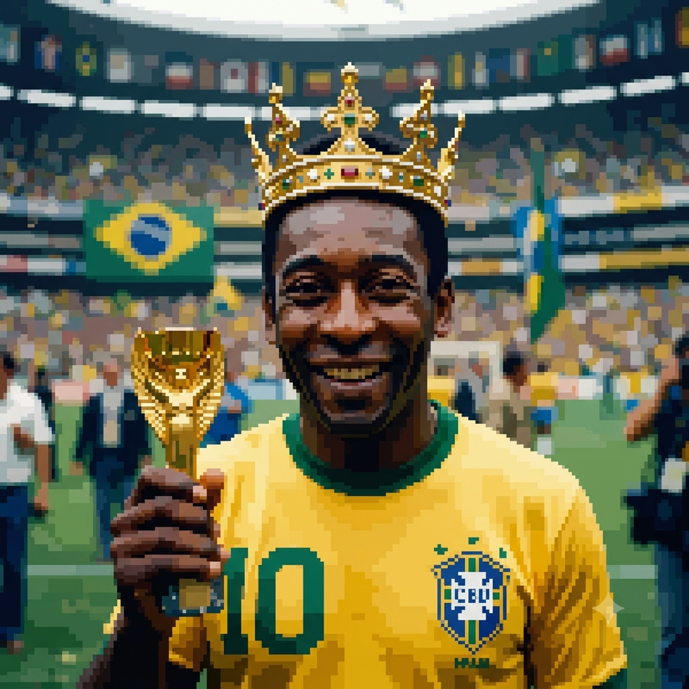

O poder do Rei do Futebol
Por: Vicente Rogal
Em 1969, o Santos de Pelé viajou para a Nigéria para jogar uma partida amistosa. O impacto da presença do craque foi tão grande que as facções rivais da Guerra de Biafra assinaram um cessar-fogo de 48 horas apenas para que todos pudessem assistir ao jogo em paz.